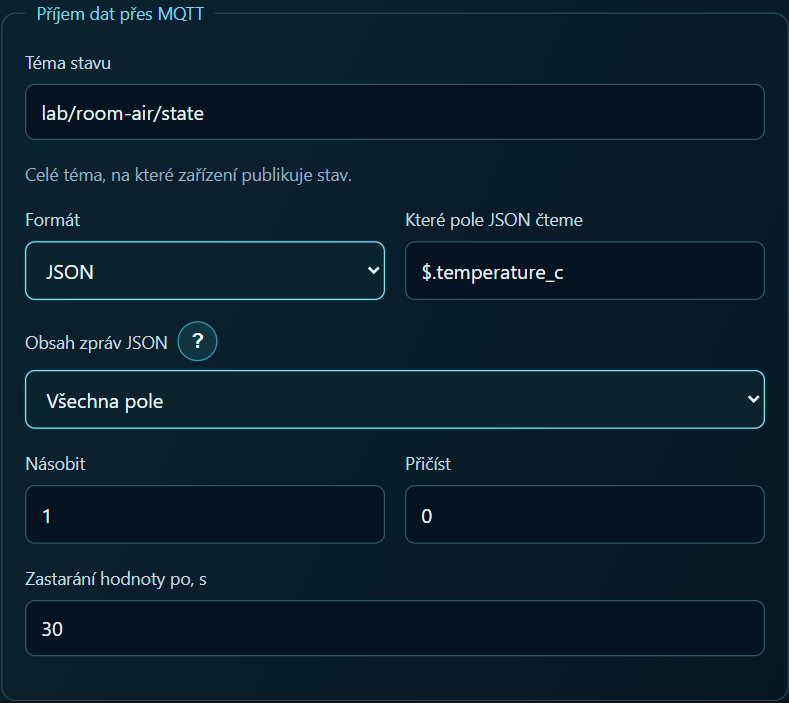

Čtyři karty na tabletu z jediného MQTT tématu
U pokojového čidla se hodí dvě stupnice, jedna pro teplotu a druhá pro vlhkost, a pod každou graf za posledních pár hodin. Když se téma a cesta k poli nastavují u každé karty zvlášť, stačí jediný překlep a graf zůstane prázdný.
V příkladu RoomAir poslal generátor do místního brokeru na téma lab/room-air/state zprávu {"temperature_c":22.0,"humidity_pct":49.6}. Další zpráva obsahovala stále 22,0 °C, ale vlhkost klesla na 49,4 %. Na dvojici zpráv si lze snadno ověřit obě vazby.
Nastavení panelu
Spusťte generátor, otevřete vyhledávání MQTT a vyberte
lab/room-air/state. Zvolte pole$.temperature_ca uložte vazbu jako tag teploty s jednotkou °C. Pole$.humidity_pctuložte jako tag vlhkosti v procentech.
U obou tagů zapněte historii. Stupnici teploty i jejímu grafu přiřaďte stejný tag teploty. Totéž udělejte pro vlhkost.
Hotový projekt zaznamenává změny. Po druhé zprávě má vlhkost klesnout z 49,6 % na 49,4 %, zatímco teplota zůstane na 22,0 °C. V historii teploty proto další bod zatím nečekejte. V archivu je připravený panel i generátor, příklad si tedy můžete vyzkoušet bez ESP32. Návod RoomAir a soubory ke stažení